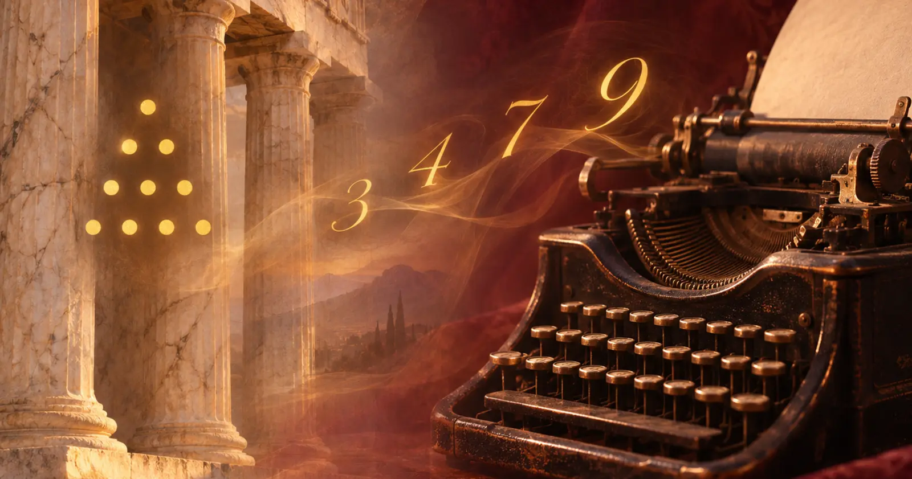

Un écart de 2400 ans qu'il faut regarder en face
Les quatre premiers épisodes de cette série ont suivi une trace documentée, sur plusieurs millénaires : les tablettes sumériennes, les fractions égyptiennes, les os oraculaires chinois, la Tétractys pythagoricienne, la gématrie hébraïque. Mais aucune de ces traditions ne correspond, telle quelle, à la numérologie que l'on pratique aujourd'hui — calcul d'un chemin de vie à partir d'une date de naissance, nombre d'expression tiré d'un prénom, année personnelle. Cette discipline précise a un berceau beaucoup plus récent et beaucoup plus localisé : les États-Unis, au tournant du 20e siècle.
Entre la mort de Pythagore, vers 495 avant notre ère, et les premiers ouvrages qui posent les bases de la numérologie moderne, il s'écoule environ 2400 ans. Sur une aussi longue période, le simple fait de se réclamer d'une filiation ne suffit pas à la prouver.
Mrs L. Dow Balliett, la première à écrire le système
Sarah Joanna Dennis, devenue Mrs L. Dow Balliett après son mariage en 1872, est née en 1847 près de Mays Landing, dans le New Jersey, et morte en 1929 à Atlantic City. Avant de s'intéresser aux nombres, elle est déjà une clubwoman active et une auteure reconnue : en 1901, elle publie The Body Beautiful, un ouvrage consacré à la philosophie Delsarte, une méthode d'expression corporelle alors en vogue aux États-Unis. Elle dirige ensuite, à partir du début des années 1910, une école, le « School of Psychology and Physical Culture », à Atlantic City, et publie une série d'ouvrages qui posent, pour la première fois sous cette forme, les bases écrites de ce qui deviendra la numérologie de caractère :
- 1904-1905Un premier ouvrage présentant un « système de nombres tel qu'enseigné par Pythagore » — c'est elle-même qui choisit ce titre et cette référence.
- 1908The Philosophy of Numbers: Their Tone and Colors, qui développe sa méthode.
- 1911Nature's Symphony, or Lessons in Number Vibration.
Le nom « pythagoricien » qu'elle donne à sa grille lettres-nombres est un choix éditorial : il adosse sa méthode à une autorité antique prestigieuse. Mais rien dans les sources disponibles ne montre qu'elle s'appuyait sur une lecture directe des textes pythagoriciens anciens, ni qu'une telle grille ait existé telle quelle dans l'Antiquité.
Julia Seton Sears et le mot « Numerology »
Julia Seton Sears — médecin de formation, elle exerce jusqu'en 1903 avant de se consacrer au mouvement New Thought — est amie de Balliett et dirige le New Age Thought Church and School, où les deux femmes se lient. C'est à elle que plusieurs sources de numérologie attribuent la création du mot anglais « Numerology », mais cette paternité précise reste incertaine : les dictionnaires étymologiques font remonter le terme anglais à environ 1907-1911 sans en nommer l'auteur, et les sources biographiques les plus rigoureuses sur Seton la créditent surtout d'avoir modernisé et popularisé la pratique — la « Science of Names and Numbers » devenue « Numerology » — plutôt que d'avoir forgé le mot à une date précise.
Juno Jordan, celle qui structure la discipline
Juno Jordan est un nom de plume : née Juno Belle Kapp, fille de Julia Seton Sears, elle commence à étudier avec Balliett dès l'âge de 14 ans. Elle exerce d'abord comme dentiste, avant de se consacrer avec sa mère à la numérologie. Elle fonde ensuite le California Institute of Numerical Research et publie en 1965 Numerology: The Romance in Your Name, un ouvrage qui reste une référence du genre. Elle meurt en 1984, deux mois avant son centième anniversaire. C'est à travers son travail que la numérologie de Balliett se diffuse largement et prend la forme standardisée — chemin de vie, nombre d'expression, nombre de l'âme — qu'on lui connaît aujourd'hui.

Pourquoi ce récit de continuité s'est imposé
Se rattacher à Pythagore donnait à une discipline toute neuve, née dans les cercles ésotériques américains du début du 20e siècle, la profondeur d'une tradition vieille de deux millénaires et demi. C'est un schéma courant dans l'histoire des pratiques ésotériques modernes : elles se construisent souvent en citant des sources anciennes et prestigieuses, sans que la continuité réelle entre les deux soit démontrée. Cela ne rend pas la pratique moderne illégitime en soi — mais cela change ce qu'on peut honnêtement affirmer sur son âge et son origine.
Ce que cette série a montré, au fond
Une fascination humaine très ancienne et très réelle
De Sumer à la Chine, en passant par l'Égypte et la Grèce, des civilisations sans contact entre elles ont, chacune de leur côté, attribué un sens aux nombres au-delà du simple calcul.
Des pratiques précises, documentées, mais disparates
Le système sexagésimal sumérien, les fractions de l'œil d'Horus, la Tétractys pythagoricienne, la gématrie hébraïque : chacune répond à un contexte, un objectif et une logique qui lui sont propres.
Une synthèse moderne, construite il y a un peu plus d'un siècle
La numérologie de chemin de vie et de nombre d'expression est l'œuvre de quelques figures précises, aux États-Unis, au début du 20e siècle — pas la survivance directe d'un savoir antique transmis sans interruption.
Sources de cet article
Questions fréquentes
- Qui a inventé la numérologie moderne ?
- Elle n'a pas un seul inventeur, mais trois figures américaines se détachent : Mrs L. Dow Balliett (1847-1929), qui publie les premiers ouvrages de « vibration numérique » autour de 1904-1911, son amie Julia Seton Sears, à qui l'on attribue la popularisation du mot « Numerology » au début des années 1910 (la paternité exacte du terme reste débattue), et Juno Jordan, élève de Balliett dès l'âge de 14 ans, qui structure la discipline au 20e siècle.
- La numérologie moderne vient-elle directement de Pythagore ?
- Non, pas directement. Il existe environ 2400 ans d'écart entre la mort de Pythagore et les premiers ouvrages de Balliett, sans chaîne de transmission continue et documentée entre les deux. Le nom « système pythagoricien » est un choix de Balliett elle-même pour donner à sa méthode une autorité antique, pas la preuve d'une filiation directe.
- Le mot « numérologie » est-il ancien ?
- Non. Le terme anglais « numerology » n'apparaît dans l'usage courant qu'au début du 20e siècle. Les traditions plus anciennes évoquées dans cette série (gématrie, calcul sexagésimal, Tétractys) existaient sous d'autres noms, avec d'autres objectifs, parfois très éloignés de la numérologie de caractère ou de destinée que l'on connaît aujourd'hui.
- Qu'est-ce que cette série permet de conclure ?
- Que la fascination humaine pour les nombres est bien réelle et très ancienne, attestée depuis Sumer, l'Égypte, la Chine, la Grèce et la tradition hébraïque. Mais la numérologie telle qu'on la pratique aujourd'hui, avec ses calculs de chemin de vie et de nombre d'expression, est une synthèse moderne, construite il y a un peu plus d'un siècle à partir de ces héritages, pas leur simple continuation.
Lecture historique. Cette série décrit des faits documentés et des traditions culturelles, sans intention de valider ou d'invalider la numérologie comme méthode de connaissance de soi. La numérologie n'est pas une science : ses interprétations sont des pistes de réflexion, pas des causes.